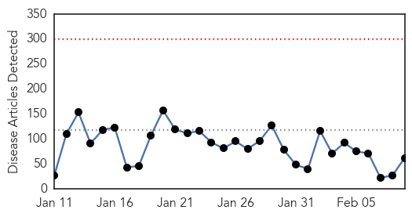
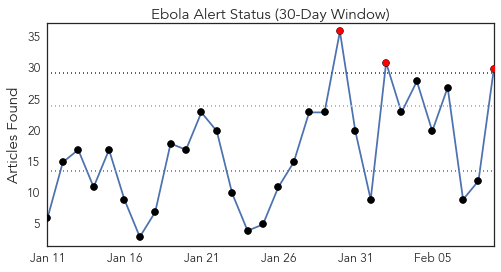
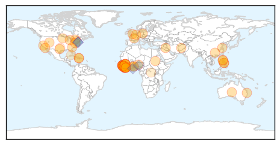
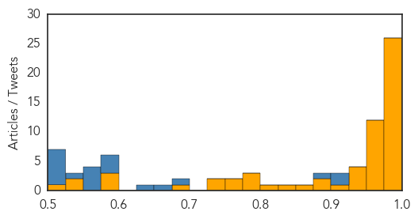

Toggle navigation
Early Warning
Daily Alerts
Ebola
Feb 09, 2015
Compare to:
-
Dengue Fever
Hemmorhagic Fever
Mold/Fungal Infection
Influenza
Meningitis
Pertussis / Whooping Cough
Middle East Respiratory Syndrome
Cholera
Hepatitis
Chikungunya
Yellow Fever
Bubonic Plague
West Nile Virus
Swine Flu
Measles
Unknown
Mumps
30 Day Trends
Web: 0
alerts
, 0
warnings
Twitter: 3
alerts
, 0
warnings
Top Articles:
Showing top 50 articles...
1.000
Ebola threatens economic gains in affected countries
1.000
Ebola threatens economic gains in affected countries
1.000
Researchers study epidemiology of Ebola Virus Disease to prevent future disease outbreaks
0.999
What Ebola Teaches Us About Public Health In America
0.999
Filipino doctors back from Africa want OFW ban, quarantine to stay
0.999
Researchers fear Ebola virus has mutated and are studying contagion degree — MercoPress
0.998
Guinea to expand use of experimental anti-Ebola drugs
0.997
'Fear, instability made it difficult to control Ebola in Africa'
0.997
Every Single Kid Who Was Orphaned By Ebola In Guinea Now Has A Home
0.997
The Coca-Cola Africa Foundation continues its Ebola relief efforts through clean water access
0.997
Experimental anti-Ebola drug approved for wider use in Guinea
0.996
21-day quarantine for OFWs from Ebola-hit countries stays
0.995
After The Worst In Liberia And Sierra Leone
0.994
Togolese President Pays Solidarity visit to Sierra Leone
0.993
Ebola quick test from Germany
0.993
Guinea approves wider use of Ebola drug
0.992
DOH stands pat on 21-day Ebola quarantine
0.989
Ebola survivors clinic to be established « Awoko Newspaper
0.988
Last mile in fight against Ebola will be the hardest says senior UN relief official
0.983
Twists, turns, eventually lead to promising Ebola vaccine
0.983
Twists, turns, eventually lead to promising Ebola vaccine
0.982
Twists, turns eventually lead to promising Ebola vaccine
0.981
Sierra Leoneans in Australia donate to Salone government
0.980
Md. local governments lax in learning about open meetings
0.980
Inmate at center of Baltimore jail scandal gets 12 years
0.980
RadioShack will close 15 Baltimore-area stores by March 31
0.971
As Ebola fades, questions arise over billions in US aid
0.969
Ebola Vaccine Trials Can Offer 'Signs Of Hope'
0.961
National
0.961
US Nurse donates 40ft container OF medical supplies to fight Ebola « Awoko Newspaper
0.951
Chinese executes business tycoon linked to murder
0.951
Sierra Leone News: China trains 5,000 Community Leaders in Sierra Leone
0.951
21-day quarantine for OFWs from Ebola-hit countries stays
0.951
Reinvigorating the Fight
0.951
China Gives U.S.$2 Milion Ebola Food Aid
0.951
Liberia: U.S$90 Million Petroleum Accord Signed
0.951
China provides food aid to Ebola-hit Liberia
0.951
In South Sudan, senior UN official says 'no doubt' rights violations are ongoing
0.946
Chancellor pledges $50m to help countries fighting Ebola
0.931
Connaught Hospital is fully functional « Awoko Newspaper
0.930
Britain pledges millions to new Ebola fund
0.930
My job is to help stop Ebola horror « Express & Star
0.916
LIBERIA: Togolese President Faure Gnassingbe,ECOWAS’ President Kadré Ouédrago Pay One-Day Visit
0.898
How a New York Psychologist and an Israeli Humanitarian Organization Are Helping Sierra Leone Stand Up to Ebola (INTERVIEW)
0.897
Time's 'person of the year' feels kinda lost
0.866
Time's 'Person Of The Year' Is Feeling Kinda Lost
0.831
Violent protests in Ebola-hit Guinea after imam's arrest
0.805
ECOWAS vows efforts to resume flights to Sierra Leone
0.798
Secretary-General Appoints Bintou Keita of Guinea Ebola Crisis Manager for Sierra Leone
0.792
Sierra Leone News : WHH Provides food and Non-food items to Quarantined Homes at Peninsular Area: Sierra Leone News
Top Tweets:
0.921
Twists & Turns Lead To Promising Ebola Vaccine - CBS Local http://t.co/un0wUb9iVd ebola EVD
0.900
Sierra Leone's Ministry of Health recorded 19 new cases of Ebola at the weekend. Declining figures, but the battle continues.
0.898
Twists, turns, eventually lead to promising Ebola vaccine - U.S. News & World Report http://t.co/3YpKl4R2wp ebola EVD
0.896
After Ebola: See Life Returning to Normal in Liberia - TIME http://t.co/xkuREx7Yk6 ebola EVD
0.885
Ebola Update: 22,525 confirmed, probable and suspected cases in 3 most affected countries, with 9,004 deaths. EbolaResponse
0.861
German drugmaker Stada to launch rapid test for Ebola - Reuters http://t.co/sUzl019UAw ebola EVD
0.861
German drugmaker Stada to launch rapid test for Ebola - Reuters http://t.co/EquMmHeTnZ ebola EVD
0.854
Persevering past roadblocks to build promising Ebola vaccine - Yahoo News http://t.co/IvjQpGQcYk ebola EVD
0.831
Ebola On The Ground: Ebola Deeply and OkayAfrica at Sierra Leone’s Epicenter http://t.co/ZIHTpIxJzb via
0.814
Twists, Turns, Eventually Lead to Promising Ebola Vaccine - ABC News http://t.co/uxv2sU0fFt ebola EVD
0.814
Twists, Turns, Eventually Lead to Promising Ebola Vaccine - ABC News http://t.co/ZtfyWoGs4K ebola EVD
0.814
Twists, Turns, Eventually Lead to Promising Ebola Vaccine - ABC News http://t.co/LM7e9B4wPO ebola EVD
0.802
Guinea's Health Minister Says Ebola Situation 'Improving' Via http://t.co/YUlzbVgaic
0.799
Burnings, Bombings, Ebola: Not All Dramatic Events Are Game-Changers - Daily Beast http://t.co/l7jZu1pq3X ebola EVD
0.799
Burnings, Bombings, Ebola: Not All Dramatic Events Are Game-Changers - Daily Beast http://t.co/fBgRqsRzLb ebola EVD
0.799
Burnings, Bombings, Ebola: Not All Dramatic Events Are Game-Changers - Daily Beast http://t.co/Snw61HQ3Vx ebola EVD
0.799
Burnings, Bombings, Ebola: Not All Dramatic Events Are Game-Changers - Daily Beast http://t.co/J4hcoWAzcV ebola EVD
0.799
Burnings, Bombings, Ebola: Not All Dramatic Events Are Game-Changers - Daily Beast http://t.co/BnIMDxwhn9 ebola EVD
0.799
Burnings, Bombings, Ebola: Not All Dramatic Events Are ?Game-Changers? - Daily Beast http://t.co/N0mPQCyBps ebola EVD
0.788
Part 3 in our Sierra Leone Ebola series with follows medical students who join a surveillance team http://t.co/9Z9NLVLDp3
0.773
Government pledges nearly £33m to new Ebola fund - BBC News http://t.co/oGkHvePptK ebola EVD
0.742
As Ebola fades, questions arise over billions in US aid - Fox News http://t.co/yenkGpd9cb ebola EVD
0.742
As Ebola fades, questions arise over billions in US aid - Fox News http://t.co/ueTAt5xYKk ebola EVD
0.742
As Ebola fades, questions arise over billions in US aid - Fox News http://t.co/Yz3uMivIlr ebola EVD
0.742
As Ebola fades, questions arise over billions in US aid - Fox News http://t.co/HsTScDbVvQ ebola EVD
0.638
A photographer documents Ebola’s deadly spread. http://t.co/qkAg5oxNUJ Via
0.626
Via: To Get To Zero Ebola Cases, It'll Cost A Lot: Roughly $1.5 Billion http://t.co/RRizOAxizO Ebola Ebolaresponse Ebolaoutbreak
0.626
RT: Ebola On The Ground, Part 3: The Ebola Surveillance Team: http://t.co/k5Bm1AiT69 http://t.co/GPTuFcIIcp
0.542
RT: This is brilliant & @okayafrica produce on-the-ground ebola reporting from Sierra Leone 2 min video https://t.…
0.529
CDC has updated U.S. guidance on lab testing for assessment & care of patients for whom Ebola is a concern. http://t.co/5n4oJLnVom
Web/News Articles

Tweets

Article Locations

Article Confidences
